Доступность в web-интерфейсах
Кузнецов Андрей / РБС
Кто я и чем занимаюсь
- Верстал с 2005 года
- До 2012 года Flasher-фрилансер

- С 2012 ушел в Frontend разработку
- Последние 3 года Frontend Lead в компании "Рунет Бизнес Системы"
Что такое доступность?
Доступность (accessibility, a11y) – возможность использования интерфейса всеми, независимо от физических или технических ограничений.
Мотивации
- Моральная
- Финансовая
- Юридическая
Кому это нужно?
- Пользователи с нарушениями зрения
- Пользователи с нарушением опорно-двигательного аппарата
- Пользователи с временным ограничением возможностей
-
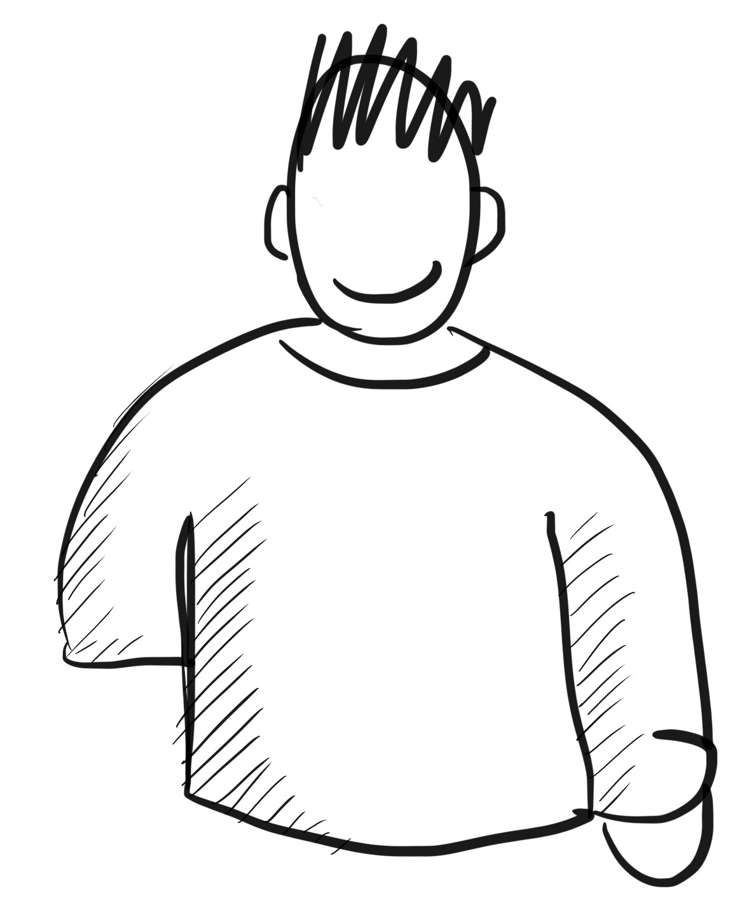
Постоянные
-
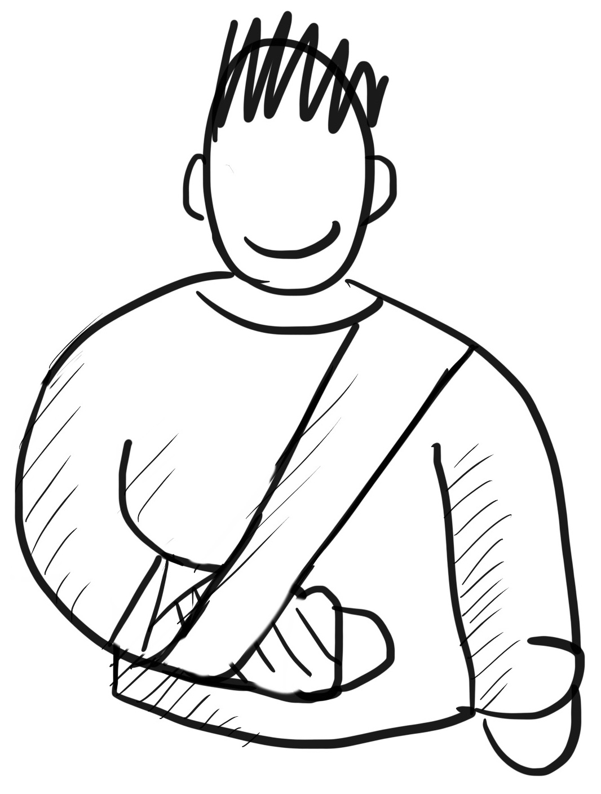
Временные
-
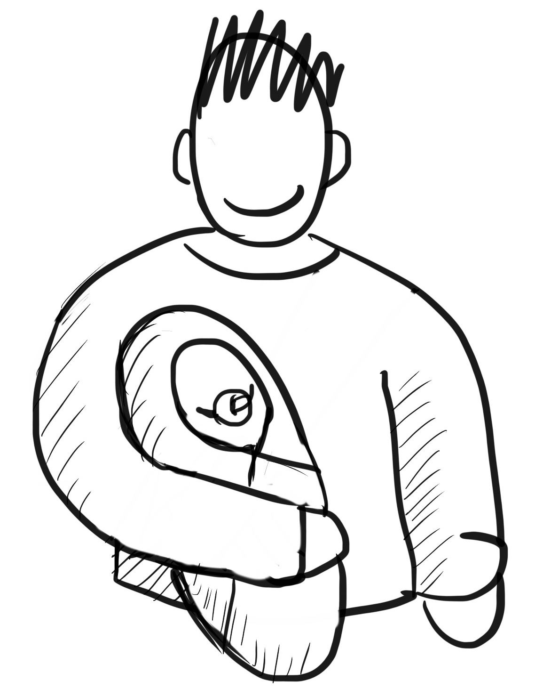
Ситуационные
Наверное, для таких пользователей есть специальные приложения и сервисы?

Как незрячие пользуются сайтами?
Windows
- NVDA (бесплатный)
- JAWS (платный)
Android
- TalkBack
MacOS, iOS
- VoiceOver
Как незрячие пользуются сайтами?
Как незрячие пользуются сайтами?
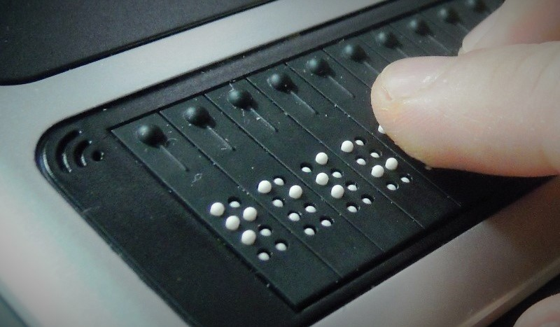
Как внедрять accessibility?
Спойлер: достаточно следовать существующим стандартам!
- WCAG (Web Content accessibility guidelines) от группы W3C
Ссылка
- Section 508 (действует на территории в США)
Ссылка
Основные рекомендации
1. Требуйте от дизайнеров всех состояний элементов!
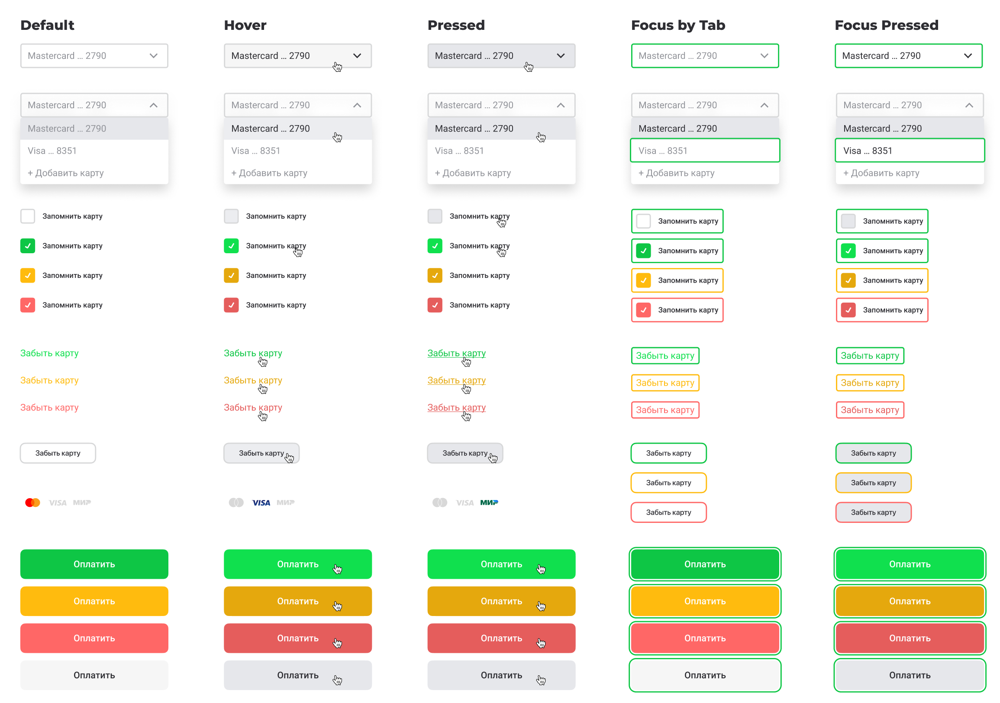
2. Больше контрастности!
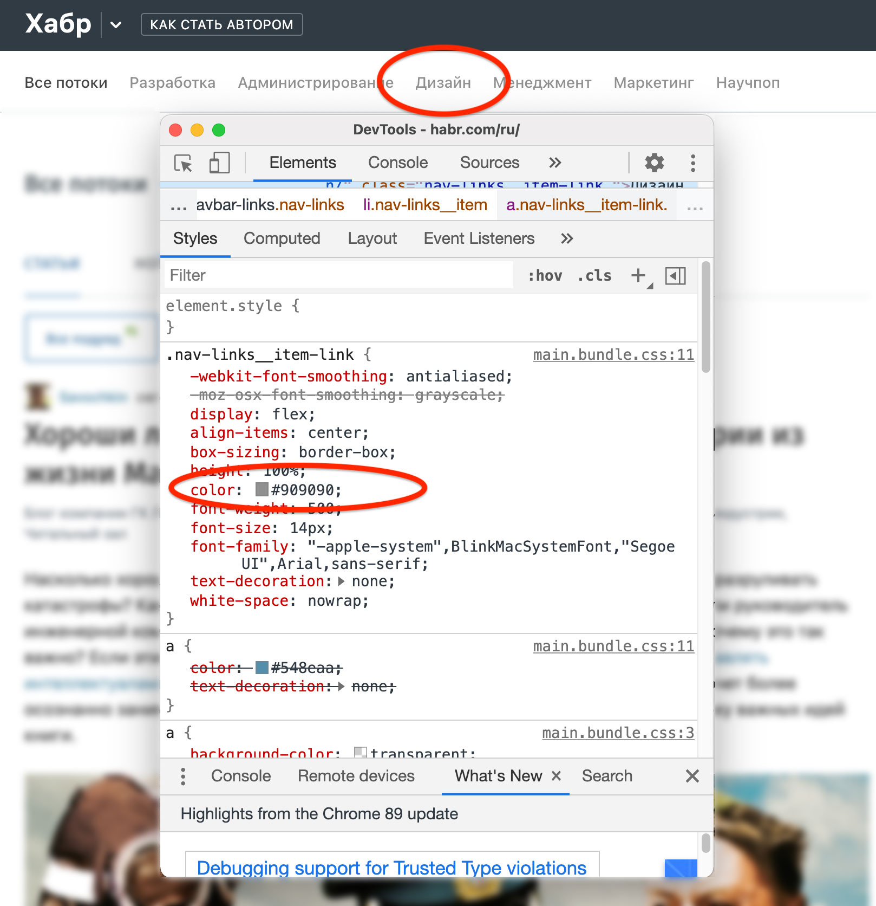
2. Больше контрастности!
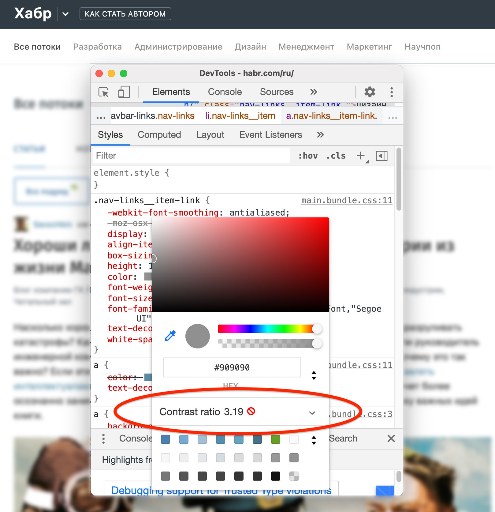
2. Больше контрастности!
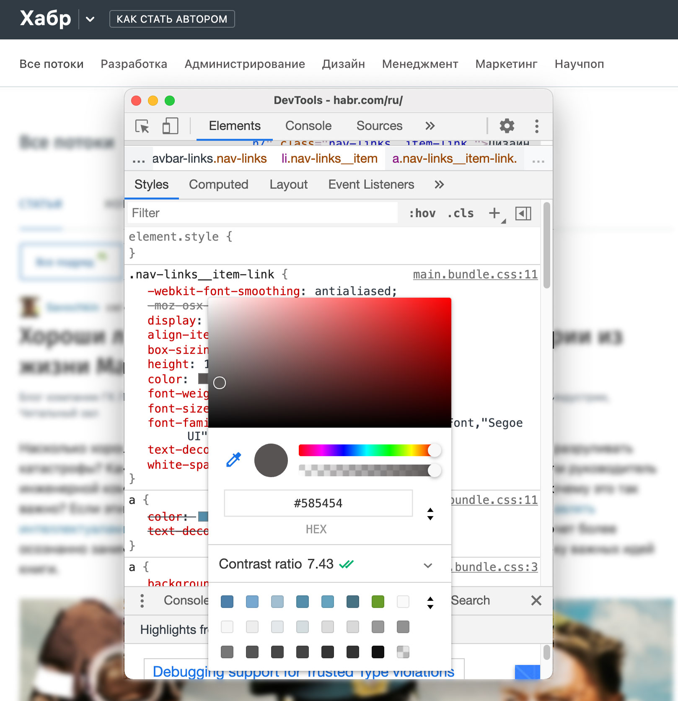
3. Даёшь семантическую верстку!
header
section
footer
article
nav
button
ul
h1
Они передают контекст агенту пользователя, поэтому он будет знать как взаимодействовать с такими элементами и чего от них ждать.
А еще их любит SEO
4. Альтернатива для изображений, видео
Плохо
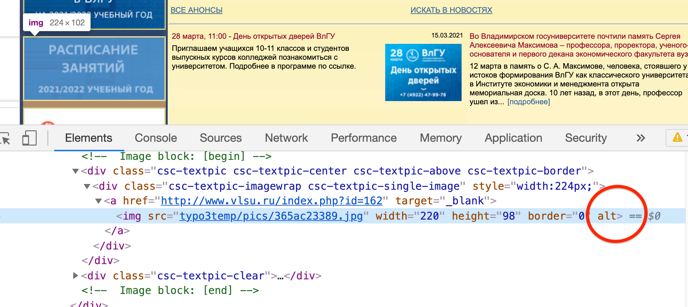
4. Альтернатива для изображений, видео
Хорошо
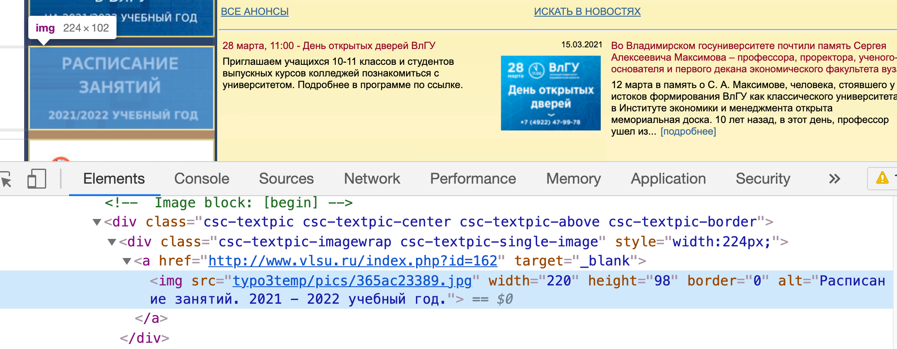
5. Поддержка озвучки для сложных элементов
<button aria-pressed="false">Toggle Button</button>
<div role="alert">Error! Try again!</div>
Что мы можем как разработчики?
- Сделайте доступность частью регламента разработки своей команды
- Старайтесь проверять функционал на реальных людях
- Обсуждайте доступность со своей командой
- Капайте на мозг бизнесу
- Делитесь своим опытом
Что не так с версиями для слабовидящих
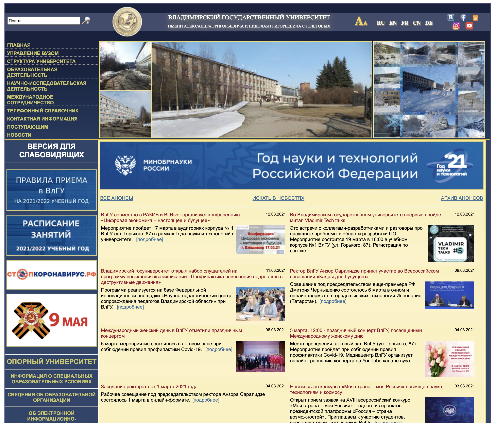
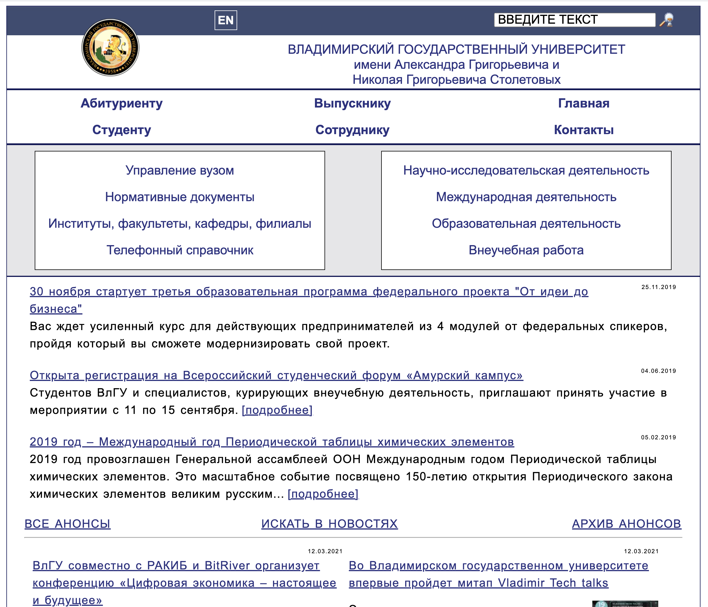
Что если я не разработчик,
но хочу помочь?
Спасибо за внимание!
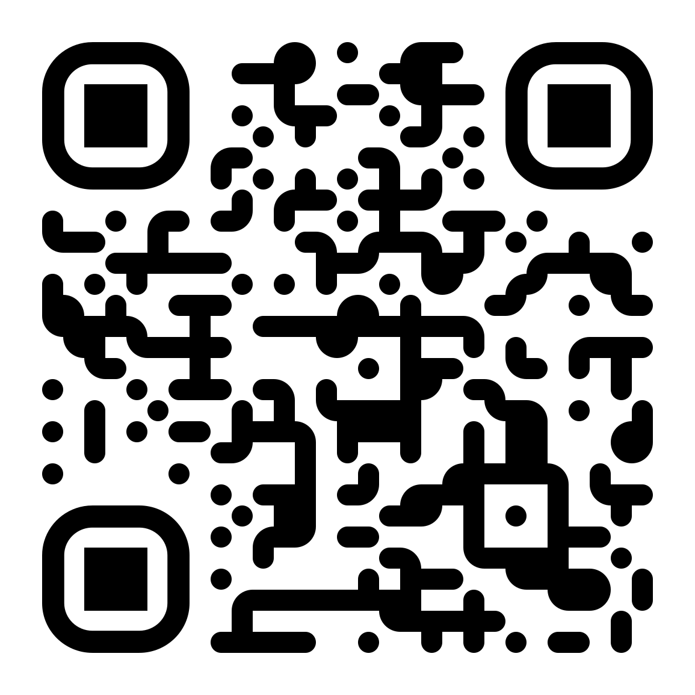